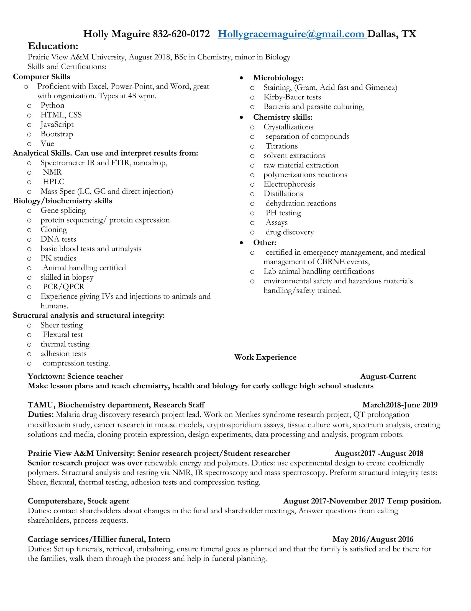

About Me
I created this site with links to some of my projects to show what I can do so far. I am trying to get into the computer science field, although my degree is in chemistry.
I went to Prairie View A&M to obtain my Bachelor’s degree in Chemistry. During my senior research project, I learned to use various machines and software for each. I then went to Texas A&M to work doing research, it was in this time that I first dabbled with programing. I took a liking the working with the machines, and I learned how to use and program the robots in the lab. One of these robots I frequently used had its own, but simple programing language, this is where I noticed an enjoyment for coding. I have been learning to code by doing classes on Udemy, I am currently doing a Java class. I know JavaScript, Python, HTML, CSS and Vue.
Contact Me
Phone:832-620-0172
Email:hollygracemaguire@gmail.com
Resume
Although my past experience has been very different from the route that I am now pursuing, there are some valuable skills that translate over. I have a lot of analytical skills from my time in research, it also honed skills for problem solving and critical thinking.
I was the project lead for a Malaria drug discovery project which allowed me to develop leadership skills. I gained experience working in teams from the Menkes syndrome project, cryptosporidium drug study, QT prolongations studies, and cancer research. All animal work was done closely with a team, the previously mentioned projects involved the use of animals. I also have experience working independently from a cloning and gene-splicing project, and from my time doing polymer research. I gained experience, and found that am comfortable working in all types of roles, from leadership, to simply following protocols.
